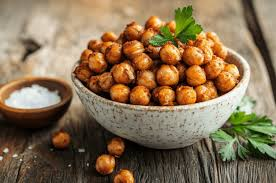

Roasted Chick Pea
Ingredients:
- cup chickpeas (boiled or canned, drained & dried)
- 1 tbsp olive oil
- ½ tsp salt
- ½ tsp black pepper
- ½ tsp cumin or paprika (optional, for extra flavor)
- ¼ tsp garlic powder (optional)
Instructions:
- Preheat oven to 200°C (400°F).
- Dry the chickpeas with a paper towel to remove moisture for extra crispiness.
- Toss chickpeas with olive oil, salt, and seasonings.
- Spread evenly on a baking tray and roast for 25-30 minutes, shaking halfway.
- Cool & Enjoy: Let them cool for 10 minutes (they get crunchier as they cool).
Back To Top